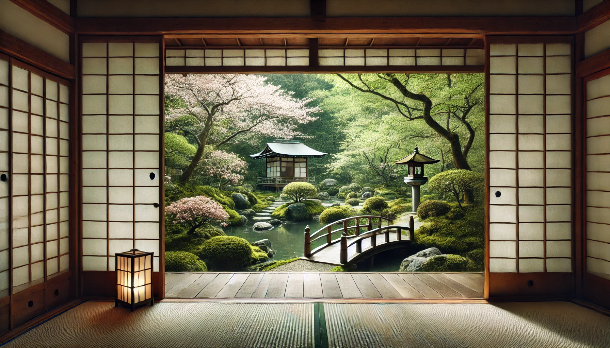

This website is awesome
This website has some subtext that goes here
under the main title. It's a smaller font and the
color is lower contrast

 this is some subtext under an illustration or image
this is some subtext under an illustration or image
 this is some subtext under an illustration or image
this is some subtext under an illustration or image